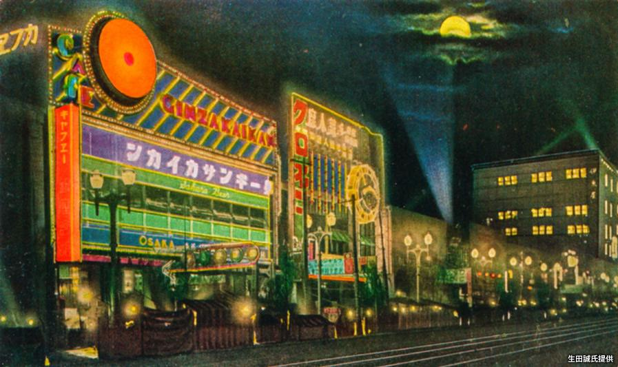
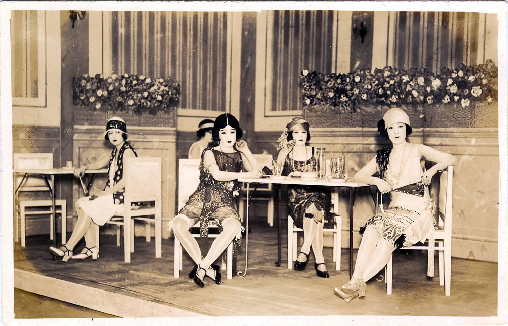
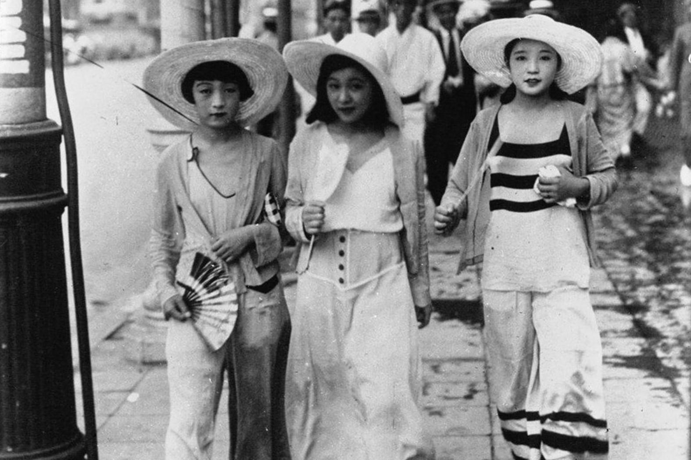
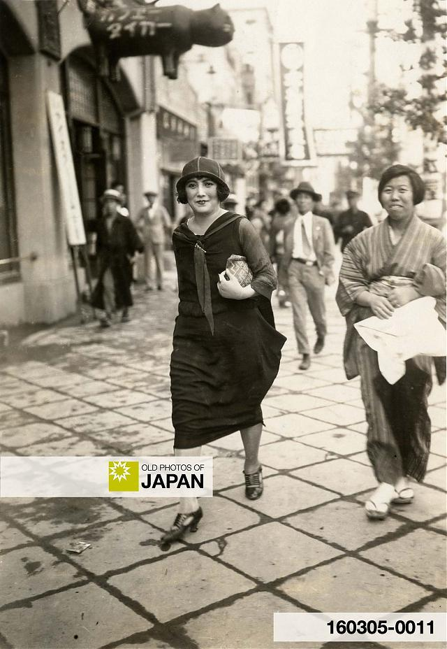
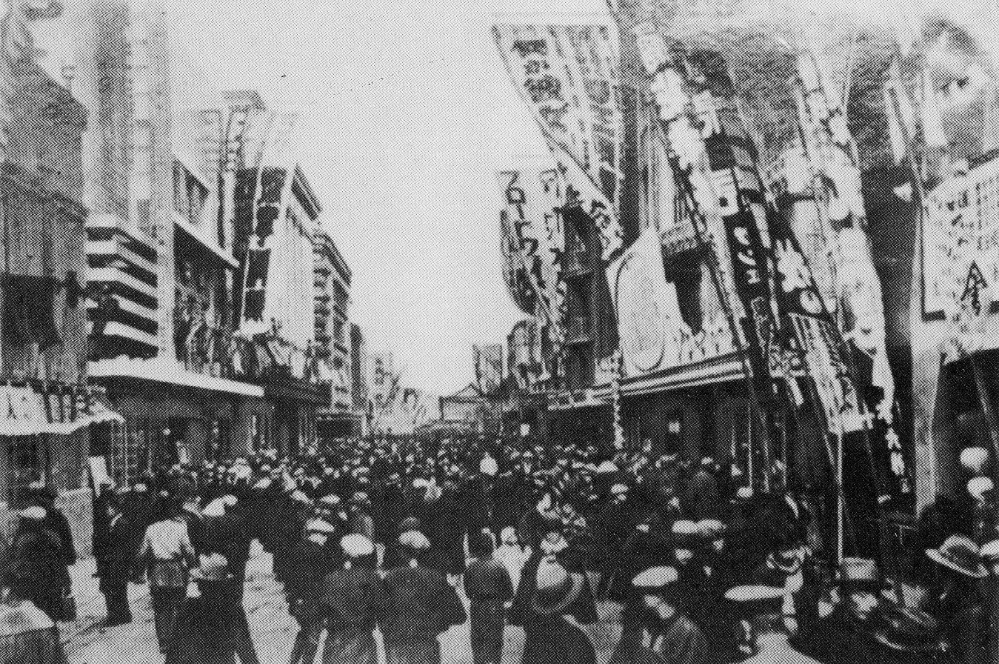
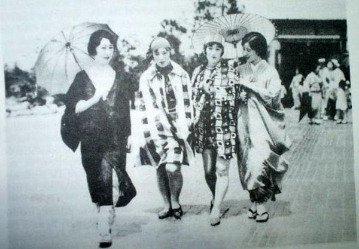
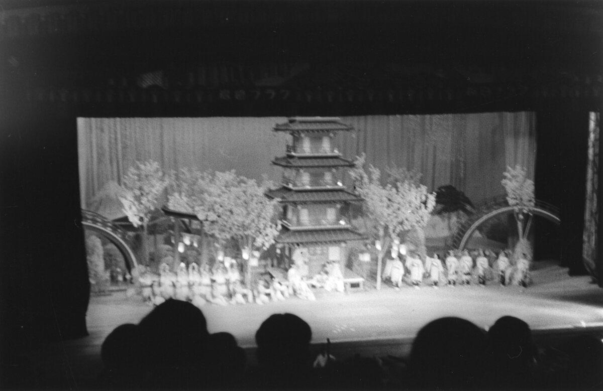
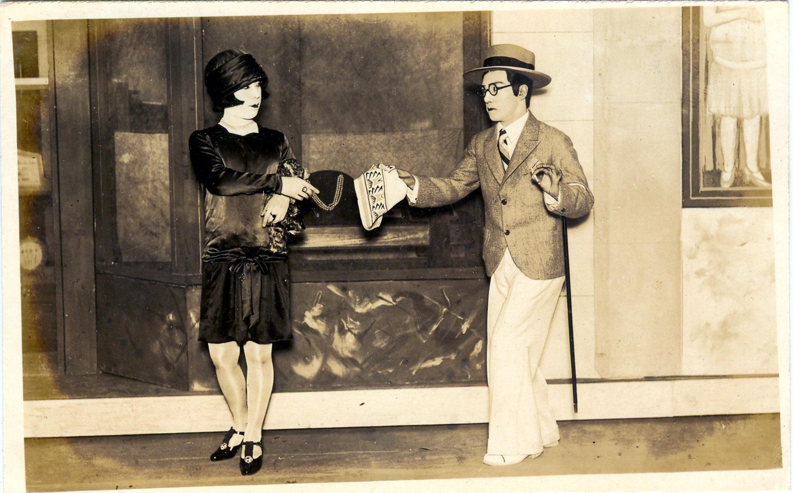
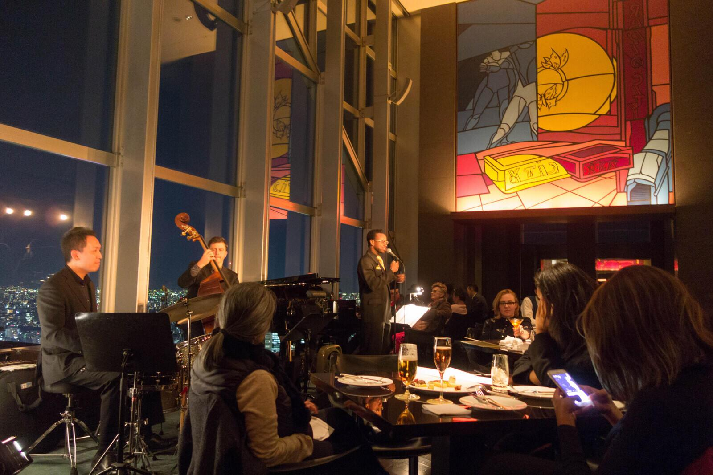

Tokyo, late 1920s — modernity under electric light
The street is brighter than you expected.
Electric signs in Ginza flicker unevenly, but insistently. Shop windows stay lit longer than they should. The city doesn’t feel ancient—it feels recently rearranged.
You follow the sound into a café-dance hall. Not large, not hidden. Just… new.
The room
Tables are spaced with intention—neither crowded like Shanghai nor formal like London.
At one table:
young women in Western dresses—shorter hems, bare arms
At another:
men in suits, collars stiff, posture careful
And moving between them:
Women in kimono.
Not older, not traditional—just different choices being made at the same time.
No one remarks on it. But everyone notices.
The sound
A small band plays something borrowed.
Jazz—but filtered.
You hear the structure from New York City:
syncopation
rhythm that lifts and drops
But the phrasing is more contained. Less push, more precision.
It’s not imitation.
It’s adaptation.
The movement
On the floor, couples try the steps.
Charleston—recognizable, but restrained:
kicks lower
timing more exact
less abandon, more control
You realize:
The dance has crossed an ocean—but it hasn’t kept all its behavior.
The women
They draw the eye—not because they’re performing, but because they’re choosing.
The “modern girl”—moga—moves differently:
sits differently
laughs differently
occupies space with less apology
Western dress is part of it.
But not the whole thing.
The tension
It’s quiet.
Not Berlin’s sharpness. Not Harlem’s compression.
Something more internal:
old forms still present
new ones not fully settled
both visible at once
No one is rejecting tradition outright.
No one is fully contained by it either.
The stage
In nearby districts like Asakusa, revues are forming—dance, music, spectacle influenced by Europe and America.
But even there:
movement is cleaner
lines more precise
emotion slightly held back
Performance is being learned, but also translated.
The feeling
You don’t feel overwhelmed.
You feel… adjusted.
Everything familiar—but slightly altered:
music
clothing
behavior
Modernity hasn’t replaced anything.
It’s layered itself on top.
What lingers
As the band shifts tempo and the dancers adjust again—quickly, carefully—you realize:
Nothing here is fully imported.And nothing here is untouched.
The line to carry
Walking back into the electric street, you understand:
This is not modernity arriving.It is modernity being rewritten.